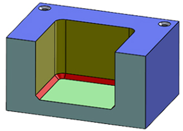
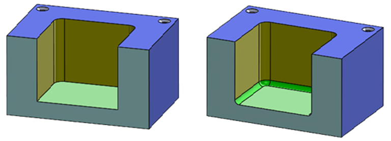
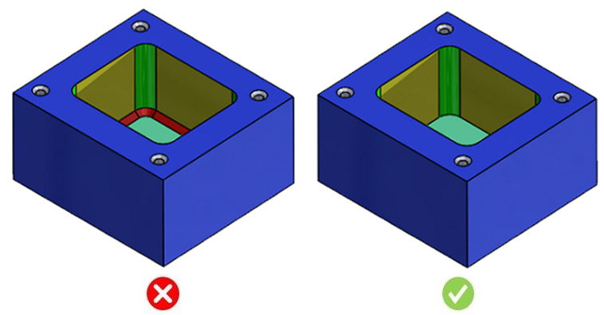

溶接ポケット（クローズドポケット）において、側壁と底面の間に面取りが存在してはなりません。
鋭利なエッジが不要な場合、底面エッジには面取りよりもフィレットを採用することが望まれます。
内側の面取りは製造が難しく、一方で底面のフィレットはボールエンドミルやブルノーズエンドミルを用いて容易に加工できます。
可能な限り、底面に面取りを設けることは避けてください。

推奨される形状

このルールは、底面に面取りを持ってはならないフライス加工ポケットをチェックします。そのため、構成情報の設定は不要です。
